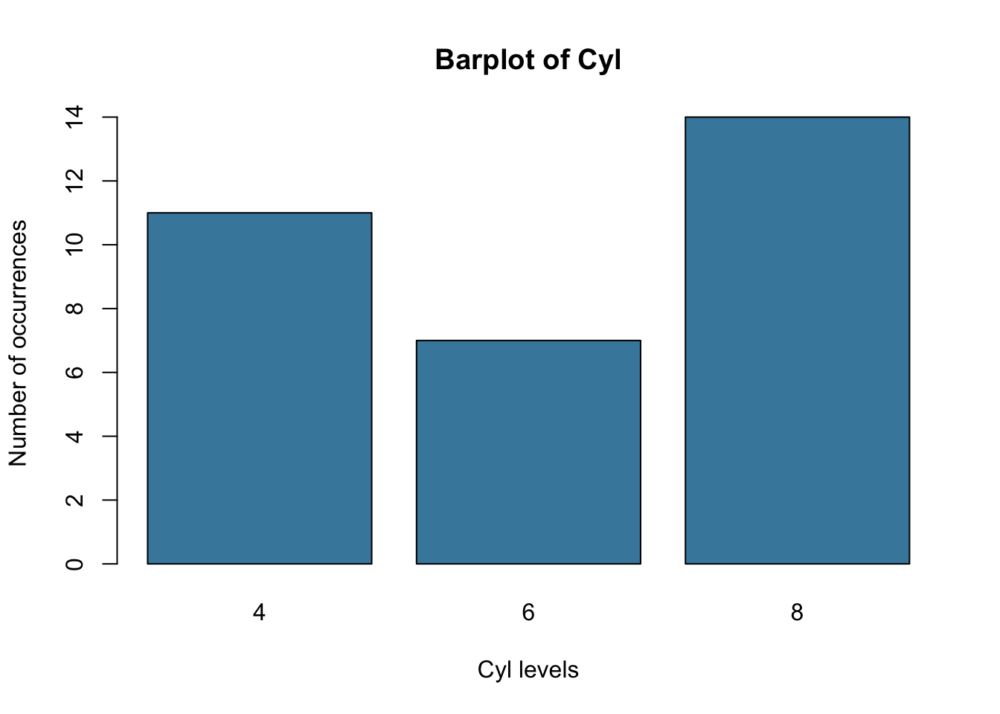
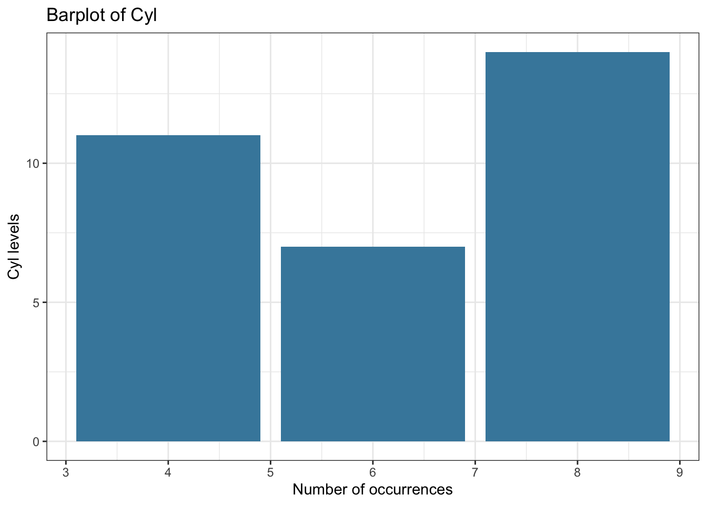
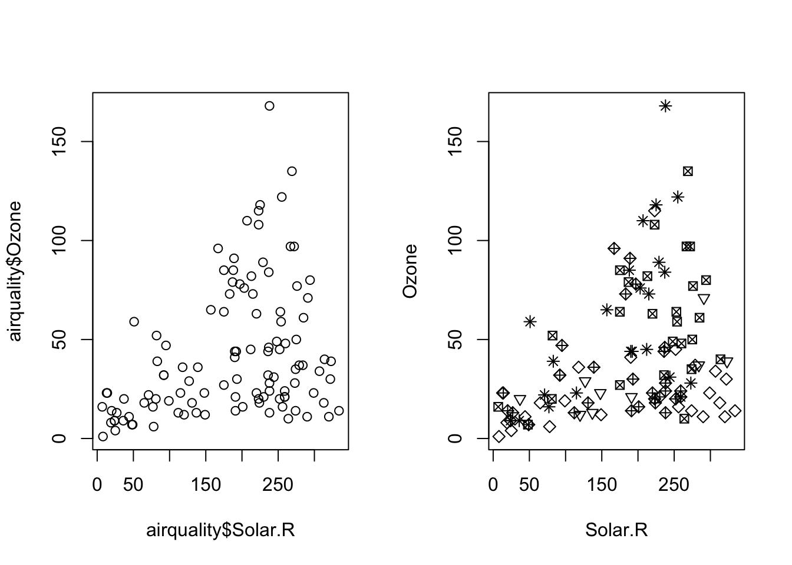
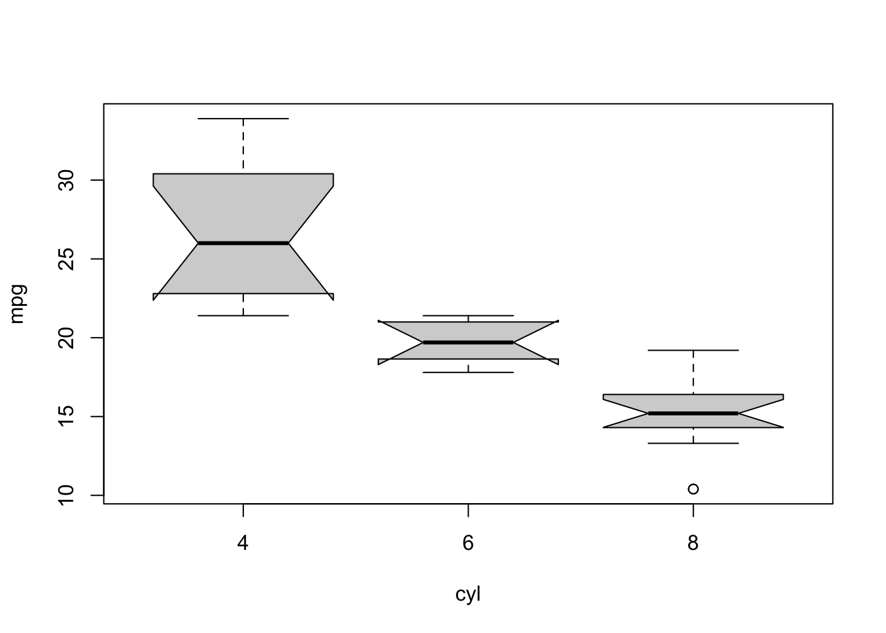
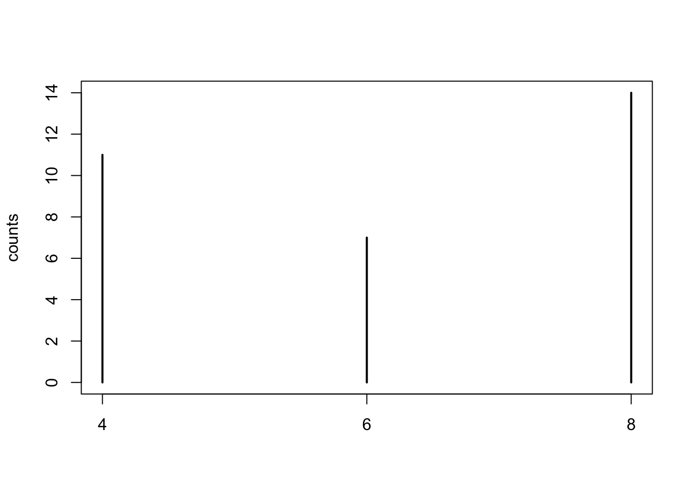
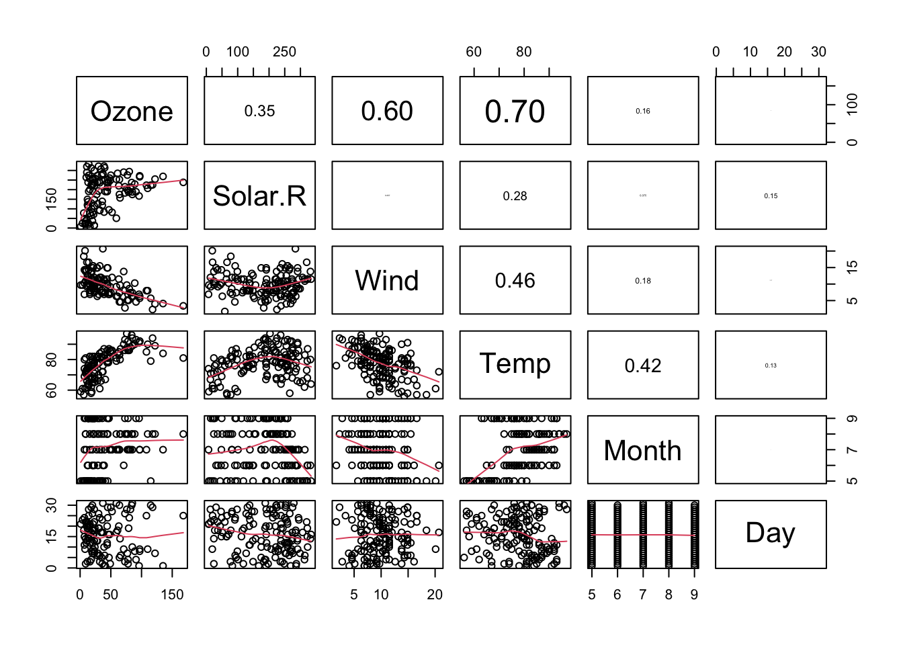
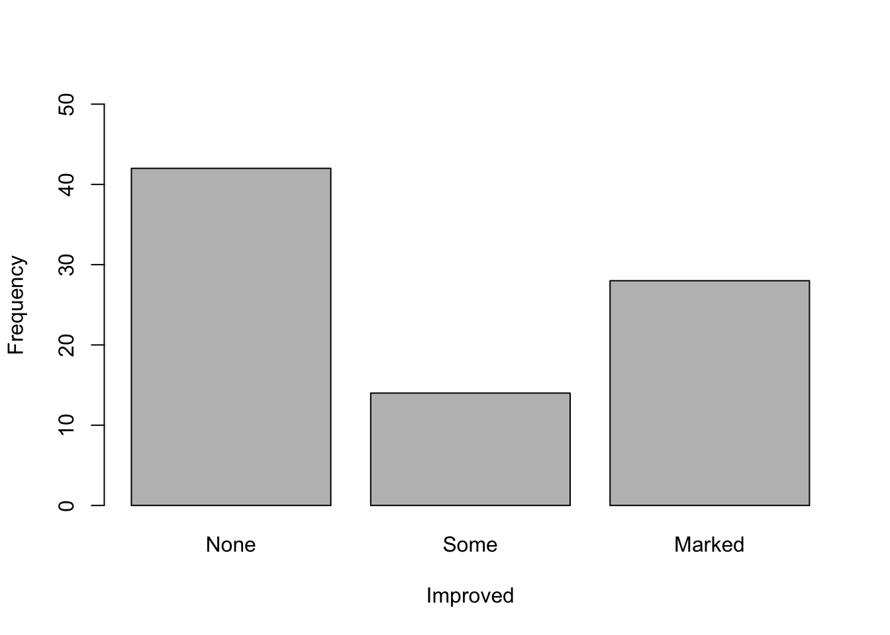
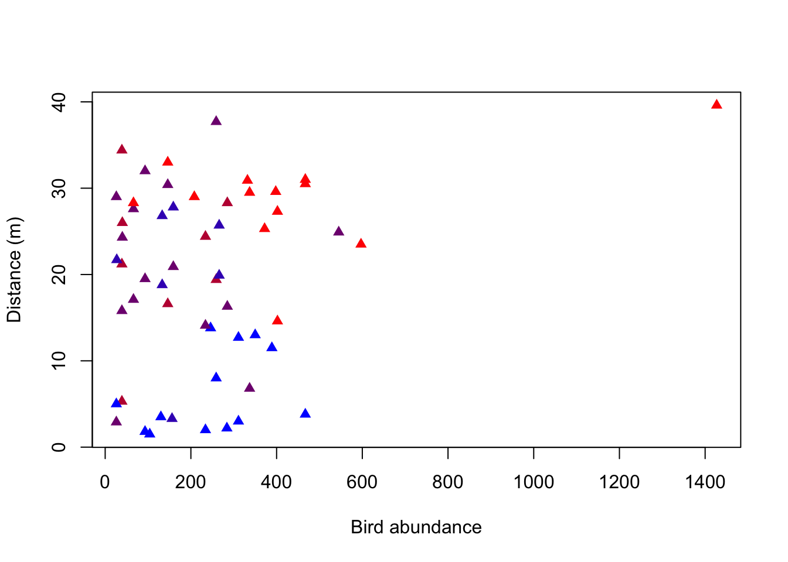

Before knowing how to plot something, you should know what you want to plot:
Scenario
Which plot
R command
Numeric
Histogram or boxplot
hist() andboxplot
Numeric with numeric
Scatterplot
plot
Numeric with categorical
Boxplot
boxplot(numeric~categorical)
Categorical with categorical
mosaicplot or grouped barplot
mosaicplot(table(categorical, categorical)) or barplot(data, beside=TRUE)
Here is a website with a decision tree about when to choose which plot https://www.data-to-viz.com/
Once you know what you want to plot, there are lot of websites that will show you the respective R code. One important consideration, however: there are at least two popular ways of doing R graphis:
base R
ggplot2
for which the code looks completely different. You should probably get to know both types, but I would recommend to start with base R. I’m just saying this so that you are not confused, because a lot of the examples will also show you ggplot code. Here some useful links:
A few simple graphs in base R https://www.statmethods.net/graphs/index.html
R code for the most common graphics (with a ggplot2 tendecy) https://www.r-graph-gallery.com/index.html
R coder graph tutorials https://r-coder.com/r-graphs/
3.1.1.1 Numerical variable - Histogram and Boxplot
The histogram plots the frequency of the values of a numerical variable with bins (otherwise each unique value will appear only once, the range will be cut in n elements). The number of bins is automatically inferred by the function but can be also changed by the user
The boxplot plots the distribution of a numerical variable based on summary statistics (the quantiles). The boxplot is particular useful for comparing/contrasting a numerical with a categorical variable (see below)
par(mfrow =c(1,2)) # number of plots, one row, two columnshist(iris$Sepal.Length, main ="Histogram", # titlexlab ="Sepal.Length", ylab ="Frequency",las =1) # rotation of x and y values (las = 1, all of them should be horizontal)boxplot(iris$Sepal.Length, main ="Boxplot", # titleylab ="Values")
barplot(counts, main ="Barplot of Cyl",ylab ="Number of occurrences",xlab ="Cyl levels",col ="#4488AA")

ggplot(mtcars, aes(x = cyl)) +geom_bar(fill ="#4488AA") +ggtitle("Barplot of Cyl") +xlab("Number of occurrences") +ylab("Cyl levels") +theme_bw()

3.1.2 Two variables
The general idea of plotting is to look for correlations / associations between variables, i.e. is there a non-random pattern between the two variables.
3.1.2.1 Numerical vs numerical variable - Scatterplot
# Scatterplotpar(mfrow =c(1,2))plot(airquality$Solar.R, airquality$Ozone)# plot(Ozone ~ Solar.R, data = airquality) #the same# different symbol for each monthplot(Ozone ~ Solar.R, data = airquality, pch = Month)

We can also add other objects such as lines to our existing plot:
par(mfrow =c(1,1))plot(Ozone ~ Solar.R, data = airquality)abline(h =50)
3.1.2.2 Categorical vs numerical variable - Boxplot
Often we have a numerical variable (e.g. weight/fitness) and a categorical vairable that tells us the group of the observation (e.g. control or treatment). To compare visually now the distributions of the numerical variable between the levels of the grouping variable, we can use a boxplot
boxplot(mpg ~ cyl, mtcars, notch=TRUE) # formula notation## Warning in (function (z, notch = FALSE, width = NULL, varwidth = FALSE, : some## notches went outside hinges ('box'): maybe set notch=FALSE

# boxplot(x = mtcars$cyl, y = mtcars$mpg) # the same
ggplot(mtcars, aes(y = mpg, group = cyl)) +geom_boxplot(notch=TRUE) +theme_bw()## Notch went outside hinges## ℹ Do you want `notch = FALSE`?## Notch went outside hinges## ℹ Do you want `notch = FALSE`?

3.2 Summary statistics
Numeric values
Continuous measurements such as size, weight, time, length, etc.
Typical summary statistics:
quantiles (% of data below/over quantile): e.g. median == 50% quantile, 50% of the data below and 50% over
Central moments:
First moment: Mean
Second moment: standard deviation, measure of spread
Third moment: skewness, measure of symmetry
Fourth moment: kurtosis, measure of peakedness
Code
set.seed(10)A =scale(exp(rnorm(1000,sd =0.5)))hist(A, main ="")abline(v =quantile(A, probs =c(0.05, 0.5, 0.95)), col ="#AA0366", lwd =1.4)text(quantile(A, probs =c(0.05, 0.5, 0.95)), y =500, labels =c("0.05Q", "0.5Q", "0.95Q"), pos =3, xpd =NA)abline(v =mean(A), col ="#AA0366", lwd =1.4)text(x =mean(A), y =530, labels="Mean", pos =3, xpd =NA)
airquality[is.na(airquality$Ozone),] ## Ozone Solar.R Wind Temp Month Day## 5 NA NA 14.3 56 5 5## 10 NA 194 8.6 69 5 10## 25 NA 66 16.6 57 5 25## 26 NA 266 14.9 58 5 26## 27 NA NA 8.0 57 5 27## 32 NA 286 8.6 78 6 1## 33 NA 287 9.7 74 6 2## 34 NA 242 16.1 67 6 3## 35 NA 186 9.2 84 6 4## 36 NA 220 8.6 85 6 5## 37 NA 264 14.3 79 6 6## 39 NA 273 6.9 87 6 8## 42 NA 259 10.9 93 6 11## 43 NA 250 9.2 92 6 12## 45 NA 332 13.8 80 6 14## 46 NA 322 11.5 79 6 15## 52 NA 150 6.3 77 6 21## 53 NA 59 1.7 76 6 22## 54 NA 91 4.6 76 6 23## 55 NA 250 6.3 76 6 24## 56 NA 135 8.0 75 6 25## 57 NA 127 8.0 78 6 26## 58 NA 47 10.3 73 6 27## 59 NA 98 11.5 80 6 28## 60 NA 31 14.9 77 6 29## 61 NA 138 8.0 83 6 30## 65 NA 101 10.9 84 7 4## 72 NA 139 8.6 82 7 11## 75 NA 291 14.9 91 7 14## 83 NA 258 9.7 81 7 22## 84 NA 295 11.5 82 7 23## 102 NA 222 8.6 92 8 10## 103 NA 137 11.5 86 8 11## 107 NA 64 11.5 79 8 15## 115 NA 255 12.6 75 8 23## 119 NA 153 5.7 88 8 27## 150 NA 145 13.2 77 9 27# orsummary(airquality)## Ozone Solar.R Wind Temp ## Min. : 1.00 Min. : 7.0 Min. : 1.700 Min. :56.00 ## 1st Qu.: 18.00 1st Qu.:115.8 1st Qu.: 7.400 1st Qu.:72.00 ## Median : 31.50 Median :205.0 Median : 9.700 Median :79.00 ## Mean : 42.13 Mean :185.9 Mean : 9.958 Mean :77.88 ## 3rd Qu.: 63.25 3rd Qu.:258.8 3rd Qu.:11.500 3rd Qu.:85.00 ## Max. :168.00 Max. :334.0 Max. :20.700 Max. :97.00 ## NA's :37 NA's :7 ## Month Day ## Min. :5.000 Min. : 1.0 ## 1st Qu.:6.000 1st Qu.: 8.0 ## Median :7.000 Median :16.0 ## Mean :6.993 Mean :15.8 ## 3rd Qu.:8.000 3rd Qu.:23.0 ## Max. :9.000 Max. :31.0 ##
We can visualize variables with two plots, a histogram and boxplot:
hist(airquality$Temp)
boxplot(airquality$Temp)

In a box plot, the box ranges from 0.25 to 0.75 quantiles (the interquartile range, IQR), with the median as the thick line in the box. The whiskers (the other two vertical lines) are either the min/max values or the distance to 1.5*IQR (and points outside this range are considered outliers).
Categorical data
How often do different events occur?
table(mtcars$gear)## ## 3 4 5 ## 15 12 5
Numeric with categorical
We can also calculate summary statistics per level of a categorical variable for a numerical variable of interest. We can do with base R but it is easier with the dplyr package:
library(dplyr) # uses tidyverse syntax## ## Attaching package: 'dplyr'## The following objects are masked from 'package:stats':## ## filter, lag## The following objects are masked from 'package:base':## ## intersect, setdiff, setequal, unionair_grouped <- airquality %>%# define dataset to be summarisedgroup_by(Month) %>%# define grouping factor (note that you don't need to tell which dataset to look in here (no $))summarise(meanwind =mean(Wind), meansolar =mean(Solar.R), maxOzone =max(Ozone), varTemp =var(Temp)) # define which summary statistics you want to be calculatedair_grouped## # A tibble: 5 × 5## Month meanwind meansolar maxOzone varTemp## <int> <dbl> <dbl> <int> <dbl>## 1 5 11.6 NA NA 47.0## 2 6 10.3 190. NA 43.5## 3 7 8.94 216. NA 18.6## 4 8 8.79 NA NA 43.4## 5 9 10.2 167. NA 69.8
dplyr and tidyverse
The dplyr package is part of a big software environment called tidyverse. Unique features of the tidyverse are the pipe %>% operator and tibble objects.
The %>% operator:
Applying several functions in sequence on an object often results in uncountable/confusing number of round brackets:
max(mean(range(c(5, 3, 2, 1))))## [1] 3
The pipe operator simplifies that by saying “apply the next function on the result of the current function”:
c(5, 3, 2, 1) %>% range %>% mean %>% max## [1] 3
Which is easier to write, read, and to understand!
tibble objects are just an extension of data.frames. In the course we will use mostly data.frames, so it is better to transform the tibbles back to data.frames:
If two variables A and B are related, we say that they are correlated (correlation != causality!!). We can calculate the magnitude of this relatedness with correlation factors. Correlation factors are normalized covariances (two variables have two variances, how they vary independent of each other, and they share a covariance, how much they vary together) are in the range of \([-1,1]\). The Pearson’s correlation coefficient/factor can be calculated by:
The Pearson correlation works well with linear relationship, but poorly with non-linear relationships and is sensitive to outliers. Also transforming one of the variables affects the correlation:
Code
A =runif(1000, -6, 6)B =plogis(A*3.5)par(mfrow =c(1, 2))plot(B, A)text(x =0.6, y =-4, paste0("Pearson: ", round(cor(A, B, method ="pearson"), 3)))plot(log(B), A)text(x =-12, y =0, paste0("Pearson: ", round(cor(A, log(B), method ="pearson"), 3)))
The correlation factor for the untransformed data is 0.9 but they have a perfect relationship.
Rank correlation factors
Idea: Arranging the data following their order and using their rank 1…n for x und y, respectively. There two different rank correlation factors:
Spearman: calculate Pearson based on ranks
Kendall: counts the number of data pairs that point in the same direction
cor(airquality$Solar.R, airquality$Ozone, use ="complete.obs") # pearson = default## [1] 0.3483417cor(airquality$Solar.R, airquality$Ozone, use ="complete.obs", method ="spearman")## [1] 0.3481865# pairs plot: correlates all variables to each otherplot(airquality)pairs(airquality) #the same
# you can change what is plotted in upper and lower panel:# copy function from helppanel.cor <-function(x, y, digits =2, prefix ="", cex.cor, ...){ usr <-par("usr"); on.exit(par(usr))par(usr =c(0, 1, 0, 1)) r <-abs(cor(x, y, use ="complete.obs")) ### complete.obs must be added manually txt <-format(c(r, 0.123456789), digits = digits)[1] txt <-paste0(prefix, txt)if(missing(cex.cor)) cex.cor <-0.8/strwidth(txt)text(0.5, 0.5, txt, cex = cex.cor * r)}pairs(airquality, lower.panel = panel.smooth, upper.panel = panel.cor)
Warning
Descriptive statistics characterize properties of the data without providing any test or statement of probability.
3.3 Exercises
In this exercise you will practice:
creating and plotting contingency tables for categorical variables (mosaicplot)
plotting a numerical variable (histogram)
plotting two numerical variables against each other (scatterplot)
calculating correlations
To perform this exercise use the help of the according functions. Also have a look at the examples at the bottom of the help page. You can obtain help for a specific function in several ways:
select the function in your script (e.g. double click it or simply place the cursor in the word) and press F1
“?” + function name (e.g. ?hist) and execute
go to the “help” panel (below the environment) and search for the function
Let’s get started!
3.3.1 Contingency tables
Here, we will have a look at the data set “arthritis” from the “EcoData” package. The study was conducted as a double-blind clinical trial investigating a new treatment against arthritis. The improvement was measured as a categorical variable with the possible outcomes “Improved”, “Some” or “None”.
Install and then load the package “EcoData” and have a look at the data using the View() function. This will open a new tab next to your R script. To return to your script, close the new tab or click on your script.
library(EcoData)# View(arthritis)# Get the datadat <- arthritis# Coerce columns ’Improved' and 'Treatment' to (ordered) factors# (When the factor is ordered, other functions like table() and barplot() will use this order.# Otherwise, the levels will be ordered alphabetically.)dat$Improved <-factor(dat$Improved, levels =c("None","Some","Marked"), ordered =TRUE)dat$Treatment <-as.factor(dat$Treatment)str(dat)## 'data.frame': 84 obs. of 5 variables:## $ ID : int 57 46 77 17 36 23 75 39 33 55 ...## $ Treatment: Factor w/ 2 levels "Placebo","Treated": 2 2 2 2 2 2 2 2 2 2 ...## $ Sex : chr "Male" "Male" "Male" "Male" ...## $ Age : int 27 29 30 32 46 58 59 59 63 63 ...## $ Improved : Ord.factor w/ 3 levels "None"<"Some"<..: 2 1 1 3 3 3 1 3 1 1 ...
An important function for categorical data is table(). It produces a contingency table counting the occurrences of the different categories of one variable or of each combination of the categories of two (or more) variables.
We are curious how many patients actually improved in the study and how this is influenced by the treatment. To show this graphically, we produced two plots (see below) using the following functions:
table()
plot() and barplot()
(str())
(summary())
Your task is now to reconstruct the two plots shown below by using these functions.

Hints for plot 1
What kind of plot is shown here? How many variables are shown in the plot? Approach: First, create a new object consisting of the table of the variable of interest. Then use this object for plotting. Changing plot elements: Have a look at the help of the plotting-function to find out how to change the y- and x-axis labels. What do you notice on the y-axis? You can change the limits of the y-axis using “ylim = c(from, to)” as an argument in the plotting function.
Hints for plot 2
What kind of plot can you see here? How many variables does it show? To plot this you need to create a contingency table with the variables of interest. Changing plot elements: You can name the variables in your contingency table (e.g. name = variable, othername = othervariable). The name you assign to your table will be used as the title in the plot.
What do you think of the study now? Could you already draw conclusions from this plot? Provide your answer to the last question on elearning-extern(“02_Test for Exercise in R”).
Solution
Plot 1
counts <-table(dat$Improved) # create a table which gives you counts of the three categories in the "Improved" variablebarplot(counts, # create a barplot of your tableylim =c(0,50), # change the limits of your y axis: starting from zero to 50xlab ="Improved", # add a label to your x axisylab ="Frequency") # add a label to your y axis
Plot 2
Ratios <-table(Improved = dat$Improved, Treatment = dat$Treatment) # create a table with the assigned name "ratios", give the name "Improved" to the first variable which is the variable Improved from the data set Arthritis, give the name "Treatment" to the second variable which is the variable Treatment from the data set Arthritisplot(Ratios) # create a plot of the table "ratios"
To view the tables with the names “counts” and “Ratios” you can simply execute their names:
Could you already draw conclusions from this plot? No, because this is only a descriptive plot. You can say that a large proportion of the patients that got a placebo treatment did not improve while a large proportion of the patients that got the new treatment improved markedly. However, this could also be the result of random variation and sampling. We need inferential statistics to make conclusions about the effectiveness of the treatment.
3.3.2 Histogram
Now let’s have a look at the “birdabundance” dataset, which is in the “EcoData” package. This is not stored at CRAN (the official platform for R packages, but at github where we host our own code collections). If you haven’t done this yet, use the code below to install the package (note that you also need the “devtools” package to do this. Again, to load it and make the data set accessible, execute the function library(EcoData). To view the data set you can use the View() function again.
You can also get more explanations on the data set via the help.
The dataset has been assessed by scientists in Australia who counted birds in forest fragments and looked for drivers that influence these bird abundances, e.g. the size of a forest fragment and the distance to the next fragment. We want to see how these distances vary. A histogram is the standard figure to depict one numerical variable, such as for example distance measurements.
Your task is now to reconstruct the following histogram including the labels, colors and lines using the functions:
hist() to create a histogram
abline() to add (vertical) lines to your histogram
Think about what the histogram tells you about the distances between each forest fragment and the next forest fragment. What do the red and purple lines represent? Which site was the furthest away from forest fragments? Give your answer on elearning-extern.
Hints for plotting
Change the color (look at the help to see how). You can also try other colors, e.g. your favorite color (you can find all available colors with the function colors()). Change the bar widths (breaks). Play around to see how they change. When changing the bar widths, what do you notice on the y-axis? You can change the y-axis limits using “ylim” (see examples for hist(), second last line). Change the title and the x-axis name of your histogram using the arguments “main” and “xlab”.
To add the lines, try the abline() function with the argument “v = 90” and look what happens. To remove the line, you have to execute the code producing your histogram again. Remember that abline() is a low level plotting function, which means it only adds an element to an existing plot! Instead of calculating the depicted values with a function and then pasting the values into your abline function, you can also directly use the function in abline().
See an example here:
hist(airquality$Temp)abline(v =90, col ="blue")abline(v =median(airquality$Temp), col ="red")
Solution
You can plot the histogram like this:
hist(birdabundance$DIST, # plot a histogram of the varriable distance from the data set birdabundancebreaks =20, # change bar widths, here we make them smallercol ="blue", # change color to blueylim =c(0,20), # change the range of the y axis to from 0 to 20main ="Distance distribution", # change title of the plotxlab ="Distance to the next forest fragment") # change x axis nameabline(v =mean(birdabundance$DIST), col ="red") # add a vertical line with an x value equal to the mean of the variable distanceabline(v =median(birdabundance$DIST), col ="purple") # add a vertical line with an x value equal to the median of the variable distance
What do the red and purple lines represent?
The red line represents the mean distance between forest fragments, while the purple line represents the median.
Which site was the furthest away from forest fragments?
# Extract the line in which the variable DIST takes its maximumbirdabundance[which.max(birdabundance$DIST),]## Site ABUND AREA DIST LDIST YR.ISOL GRAZE ALT## 48 48 39.6 49 1427 1557 1972 1 180
The site number 48 was the furthest away.
3.3.3 Scatterplot
As you’ve learned by now, plot() can create different types of plots depending on the type of the input data. It creates a scatterplot when plotting two numerical variables. Now we are interested to see how the abundance of birds is affected by the distance to the next forest fragment, and if there is another variable that is important for this relationship (visualized here by the color of the points).
Again, your task is to reconstruct the following plot using the following functions:
plot()
(str())
(summary())
What do you notice about the distribution of the colors along bird abundance?
What is the mean bird abundance per color?
Hints for plotting:
What is plotted on the x-axis, what on the y-axis?
There are two different ways to write the plot function. One is to stick with the “Usage” in the help of the plot function (giving coordinates along the x-axis as the first attribute and those along the y-axis as the second attribute). The other way is to write the relationship between x and y as a formula that is: “y~x, data = dataset” Use google to find out how you can change the point shapes in your plot.
Look at the dataset to find out which variable is indicated by the color of the points in the plot. Hint: It is a variable indicating 5 intensity levels. To change the color, include the attribute “col” in your plot function and set it equal to the variable.
To get a color gradient you can create a function with the following code. Apply it before producing your plot and use the created function rbPal() as the color in the plot.
# Palettes can be created with a function for the grDevices packageinstall.packages("grDevices")library(grDevices)# Create a function to generate a continuous color palette from red to bluerbPal <-colorRampPalette(c('red','blue'))# Example for color in a plotplot(Ozone ~ Solar.R, data = airquality, col =rbPal(12)[Month]) # you can use any number, here it's 12 because we have 12 months
Solution
You can either create a scatterplot of two numerical variables like this:
#Create a function to generate a continuous color palette from red to bluerbPal <-colorRampPalette(c('red','blue')) # rpPal for red to blue paletteplot(birdabundance$DIST, birdabundance$ABUND, # create a plot of the variables DIST against ABUND from the data set birdabundanceylab ="Distance (m)", # add the label "Distance" to the y axisxlab ="Bird abundance", # add the label "Bird abundance" to the x axiscol =rbPal(5)[birdabundance$GRAZE], # color the data points according to their category in the variable GRAZE from the data set birdabundancepch =17) # change the point shape

Or like this:
plot(ABUND ~ DIST, data = birdabundance, # create a plot of the variables DIST against ABUND from the data set birdabundancexlab ="Distance (m)", # add the label "Distance" to the x axisylab ="Bird abundance", # add the label "Bird abundance" to the y axiscol =rbPal(5)[GRAZE], # color the data points according to their category in the variable GRAZE as a gradientpch =17) # change the point shape
The advantage of the second version is that it uses the structure of “response variable (y) explained by (~) explanatory variable (x)”. Also, you tell the plot function which data set to use once and it will automatically draw the variables from there, while in the first version you name the data set and the respective variable each time (even for the color).
What do you notice about the distribution of the colors along bird abundance?
You can see that the blue data points are only at the low abundances, whereas the red data points are rather at the higher abundances. Purple data points are throughout all abundances. There thus seems to be a correlation between the grazing classes and bird abundances.
What is the mean bird abundance per color / level of grazing intensity?
# Option 1: Using tidyverse / dplyr as shown at the end of section 2.0.1 Summary statistics:library(dplyr)bird_grouped <- birdabundance %>%# define dataset to be summarizedgroup_by(GRAZE) %>%# define grouping factorsummarise(mean.abund =mean(ABUND)) # summarize by taking the mean of abundance# Option 2: Using base R and formula notation:bird_grouped <-aggregate(ABUND~GRAZE, data = birdabundance, FUN = mean)bird_grouped## GRAZE ABUND## 1 1 28.623077## 2 2 21.950000## 3 3 21.286667## 4 4 20.571429## 5 5 6.292308
3.3.4 Correlation
In the previous plot on bird abundance you’ve seen three variables. Now we want to know, how they are correlated with each other. Remember that we can use the function cor() to calculate correlations. Which of the following correlation coefficients (Pearson) belongs to which variable pair? Can you see these correlations in your previous plot?
Give your answer to the second last question on elearning-extern. Think about the meaning of the correlation values (positive/negative, strength). Is it what you would have expected by looking at the plot?
The first correlation (abundance to distance) tells us that there is a small positive correlation between the two variables, but it does not tell us whether it is significant or not. We will properly test such relationships later in the course. In the scatter plot we have seen this weak positive correlation already. The second correlation (abundance to grazing) tells us that there is a stronger negative correlation between abundance and grazing. We have already seen a pattern of the color of the data points along bird abundances (red towards higher, blue towards lower abundances). The third correlation (grazing to distance) tells us that there is a small negative correlation between the two variables. However, the color pattern along distance is not as obvious as for abundance.